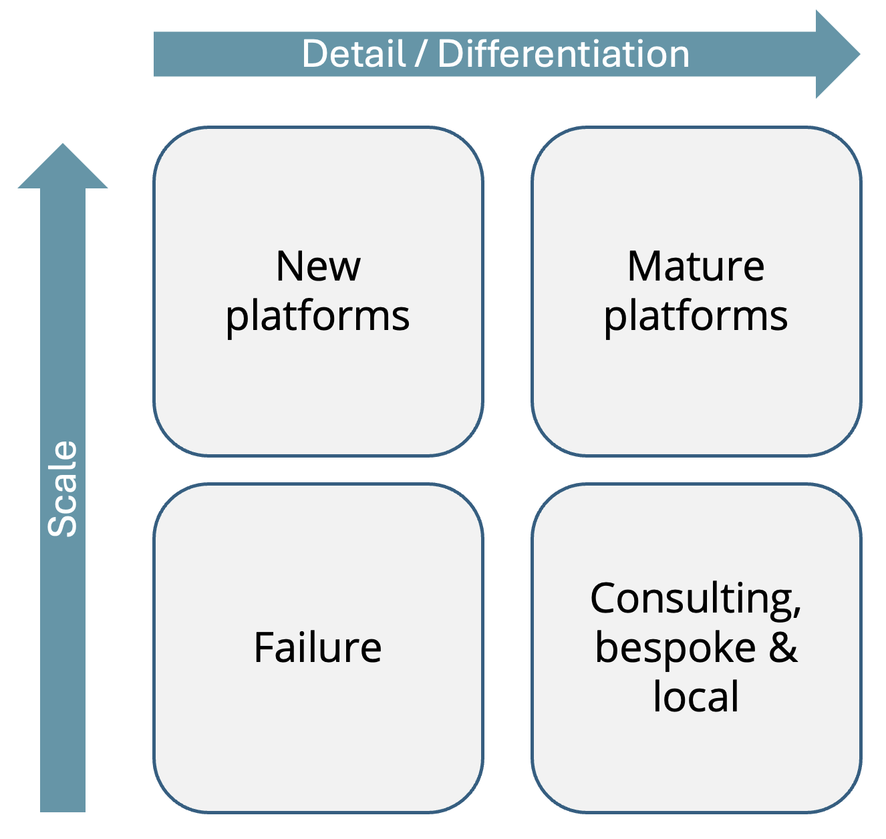

It’s easy to underestimate how vast and heterogeneous the world is. For entrepreneurs and developers this has two implications:
- There are many niches to exploit.
- It’s hard to scale.
Detail creates opportunities
Some examples of detail: geography, languages, currencies, time zones, cultural norms, consumer preferences, age groups, currencies, laws, corporate structures, payment systems and so on. The detail is layered, like geographical features: countries contain states, which contain cities, which contain neighborhoods. Each combination of details creates a different environment for businesses to carve out their niche.
This puts a natural dampener on monopolies. The existence of an incumbent doesn’t mean that there is no room for a new player. This is most obvious in local businesses: just because there is a hairdresser in town doesn’t mean that there isn’t room for another in a different neighborhood. In digital businesses, this is less obvious but still true. Some examples:
| General incumbent | Competitor | Niche |
|---|---|---|
| Zoom | Tuple | Remote pair programming |
| DuckDuckGo | Privacy-first search | |
| AWS | Modal | Dev-friendly serverless platform |
| Word | iA Writer | Distraction-free writing |
| Excel | AirTable | Linked records |
| PowerPoint | Pitch | Pitch decks |
| VSCode | Cursor | AI-powered code completion |
| Indeed | RemoteOK | Remote job board |
| Yelp | HappyCow | Vegan restaurant search |
| Audible | Blinkist | Audio book summaries |
In each of these cases the job can be done using the general incumbent, but the competitors offer better experiences within their niches.
Even seemingly standardized technologies like SQL (officially standardized in 1986) have a huge number of implementations. Why? Because no single database covers every use case.
The level of detail of the world also provides a natural moat for employees against automation and offshoring.
- Self-driving cars have been in works for decades, but there are still millions of truck drivers. Why? Trucking is a detailed task that involves driving in all sorts of conditions, loading and unloading cargo and dealing with customers.
- Remote work has been a thing for more than 10 years, but software companies still have expensive offices in the Bay Area populated by highly paid developers. Why? Because they have inertia, culture, social networks and talent density that only exist in that particular place.
- Figma released its new AI. Does this mean that designers will be out of a job? No, because the AI doesn’t have the context and communication skills that a designer has.
Detail is the enemy of scaling
In the same way that detail creates niches, it also inhibits scaling because each new detail requires a new solution. If the world is infinitely detailed, a given solution only applies to an infinitesimally small part of the world.
But the practical level of detail is not infinite: the further you zoom out the more systems and standards become visible. The laws of physics are the same everywhere. A microprocessor works the same way in Paris as in Tokyo. More than 5.4 billion people have a mobile phone.
This unlocks huge economies of scale: technology that is applicable in many conditions can be invented once, mass-manufactured or copy-pasted millions of times, and used by millions of people. That is why technology companies are the most valuable companies in the world.
Standardization can turn to natural monopolies when network effects come into play. The more people use a communication platform or a marketplace, the more valuable it becomes. This is why Facebook, Google and Amazon are so dominant. Standardization can also create monopolies to due scale, hence the dominance of TSMC in the semiconductor space.
But it’s also easy to overestimate how much can be standardized. Recently, a friend of mine who works in finance cautioned me about specializing in machine learning. He argued that the field is essentially solved because an LLM can answer any question. The economy needs one research company to develop the model and everyone else just uses their API. Applied LLM developers disagree. Building an LLM demo is easy, but real products must meet a much higher bar.
It’s at this stage that the details of the world painfully intrude. Real world data is often incomplete, noisy, biased, inaccessible or in the wrong format. Predictions may be inaccurate or lack context of the business. The standard chat interface is not suitable for most actual use cases. This is why there is an army of data scientists and consultants working as “technology sherpas” on the last-mile problems of LLMs. Realizing the economic benefits of LLMs may well require more consultants and software developers than actual ML researchers.
But my friend isn’t all wrong. Hundreds of startups are building on top of OpenAI’s models. Smartly, OpenAI is leaving the last-mile problems to others and focusing on the core, scalable, and in a way less detailed, technology.
This positioning as the default source of intelligence is lucrative, but requires enormous upfront investment and must be defended against competition. By now, 01 AI, Anthropic, Google, Nvidia and others have released models that have surpassed the original GPT-4 model. It models are only measured by their arena benchmark, it’s hard to differentiate. More detail-oriented niches offer more ways to differentiate and are generally less competitive.
Strategy
Scalability and detail can be seen in a matrix:

- New Platforms: A new technology or business model emerged and has catapulted a company to the top. Their offering is basic but scalable. Examples: OpenAI in 2023, Zoom in 2020, Google in 2000. Naming the year is required because this position is not stable, unless it’s a natural monopoly.
- Mature Platforms: Over time, the platform has added more features and detail to cater to more niches. Examples: AWS, Facebook, MS Office, Stripe. In software, this carries the risk of becoming bloated.
- Consulting & bespoke software: Dealing with each client’s needs separately. Scale is achieved by hiring more people or working more hours. Examples: Accenture, Capgemini, Infosys, freelancers, local businesses.
- Failure: The company has an undifferentiated offering and hasn’t achieved scale. It’s unlikely to survive in the long term.
There are plenty of niches to exploit and the existence of an incumbent can be taken as a signal that there is a market, rather than that the market is saturated. The hard part isn’t to find just any niche, but a niche large enough and amenable to scaling.
Questions for entrepreneurs and investors:
- Where do general incumbents fail to meet the needs of a niche?
- What types of scale does the niche support?
- Which details can I safely ignore or fix later?